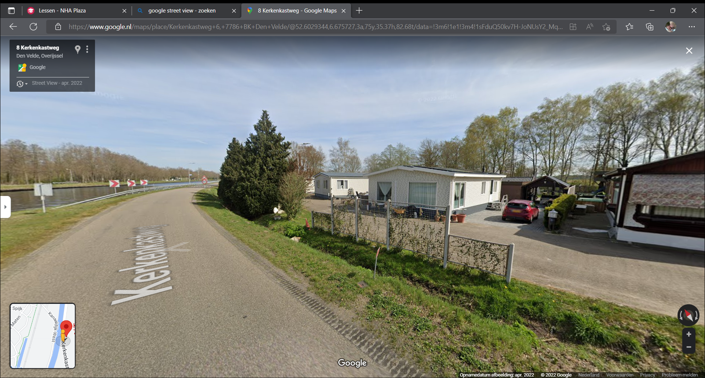
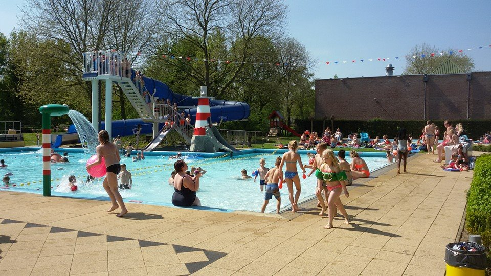
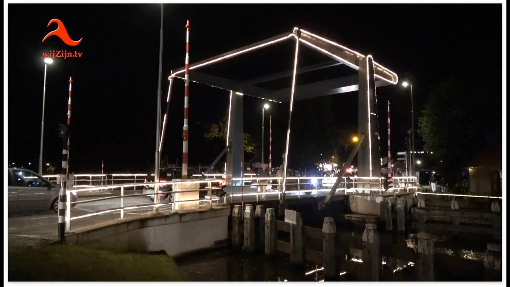

- Totale oppervlakte van 478 hectare
- 82 unieke adressen
- 70 huishoudens
- 65 woningen
- 30 bedrijfsvestigingen
----------------------------------------------Den Velde (Gemeente Hardenberg)----------------------------------------------
 Het zwembadcomplex heeft de beschikking over 3 mooie (verwarmde) baden, te weten: *Een peuterbad met kleine glijbaan en spuitelement en aangrenzend een spraypark *Een instructiebad met spuitelement, 2 kleine glijbanen en 1 grote glijbaan *Een wedstrijdbad (25 m.) met daarnaast een springkuil voorzien van 2 duikplanken (een 1 en een 3 m. plank) Ook bieden wij u, rondom de baden, een mooie ligweide en 2 terrassen, waarvan 1 gedeeltelijk overkapt is. Daarnaast is er een kiosk waar u o.a. koffie, thee, ijs, snoep en drinken kunt kopen. Verder zijn er op het terrein diverse speelmogelijkheden zoals een schommel, een speelhuisje met glijbaan, 2 tafeltennistafels en een air-trampoline.
 Lichtstad is een begrip in de wijde omgeving! Negen dagen activiteiten voor jong en oud, sportief en cultureel! De festiviteiten ontlenen de naam aan de door met tienduizenden lampjes verlichte en versierde straten. De organisatie is in handen van de Oranjevereniging Gramsbergen e.o. in samenwerking met de horecaondernemers, tal van verenigingen, vrijwilligers, sponsoren en niet te vergeten de inwoners van Gramsbergen. Gramsbergen, Lichtstad van het Noorden! De straten van Gramsbergen zijn gedurende Gramsbergen Lichtstad versierd en verlicht. Om de sprookjesachtige taferelen goed te kunnen bekijken zijn er routes uitgezet. Die kun je met de auto en op de fiets prima rijden en leiden je langs door de straten van Gramsbergen. Bij het binnenrijden van Gramsbergen staat de route middels pijlen aangegeven. Kom, zie en bewonder! Gramsbergen Lichtstad, een fascinerend schouwspel waar menigeen graag een eindje voor omrijdt!